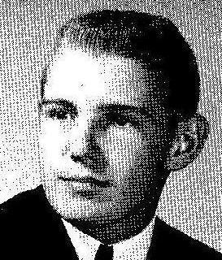
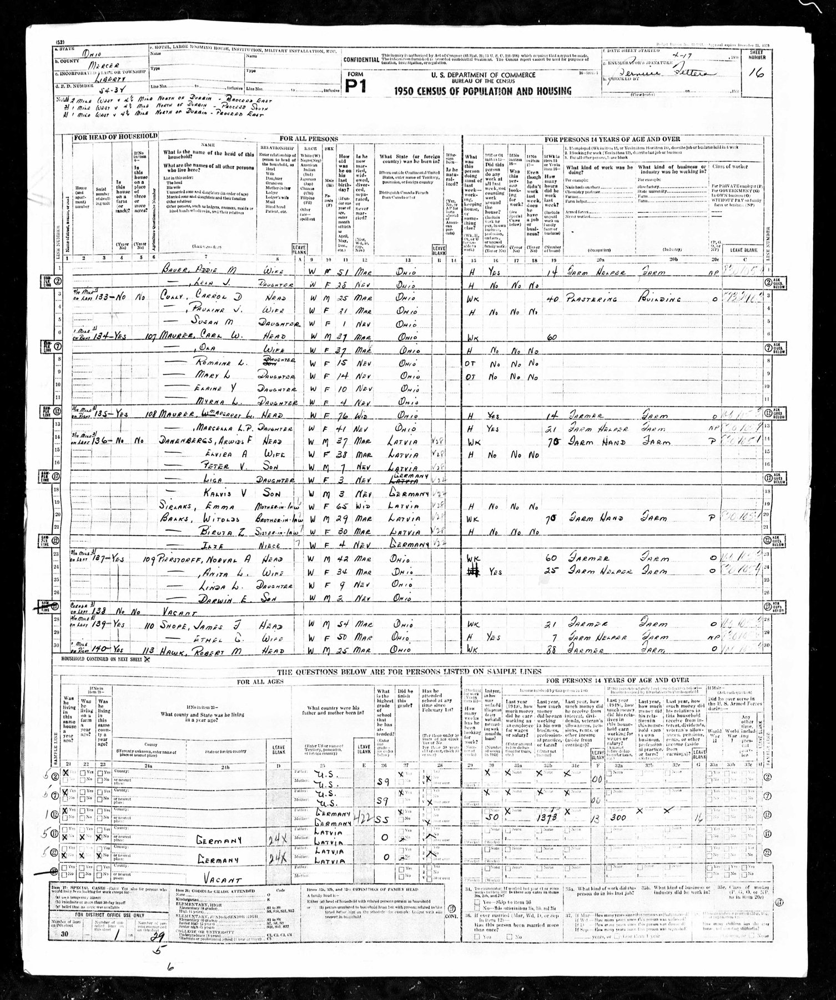
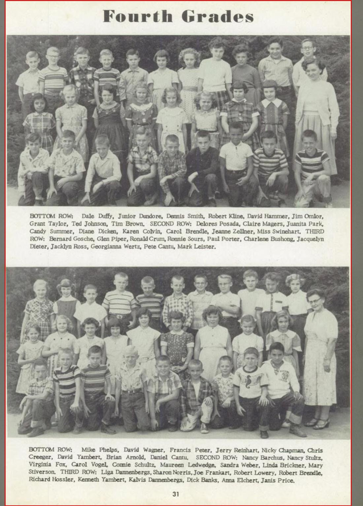
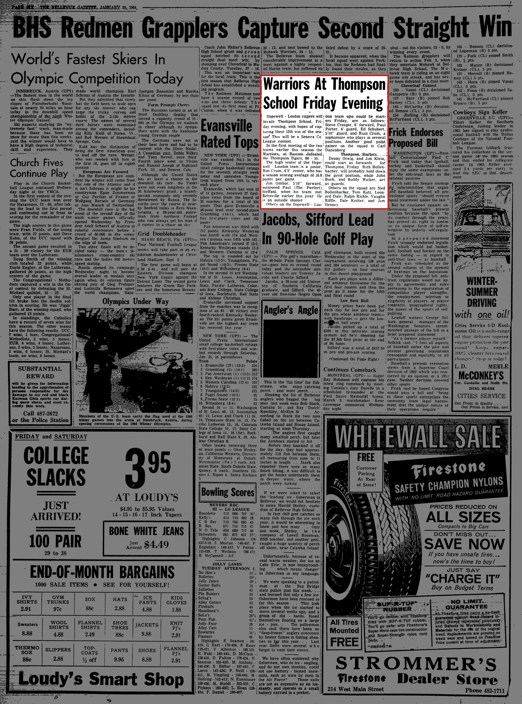
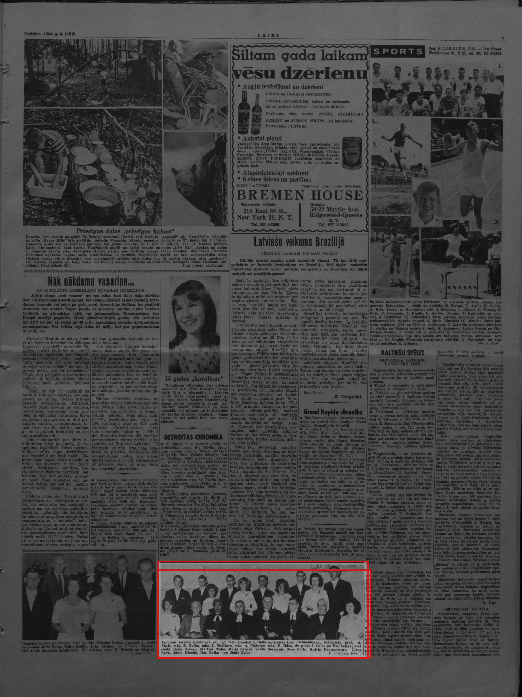
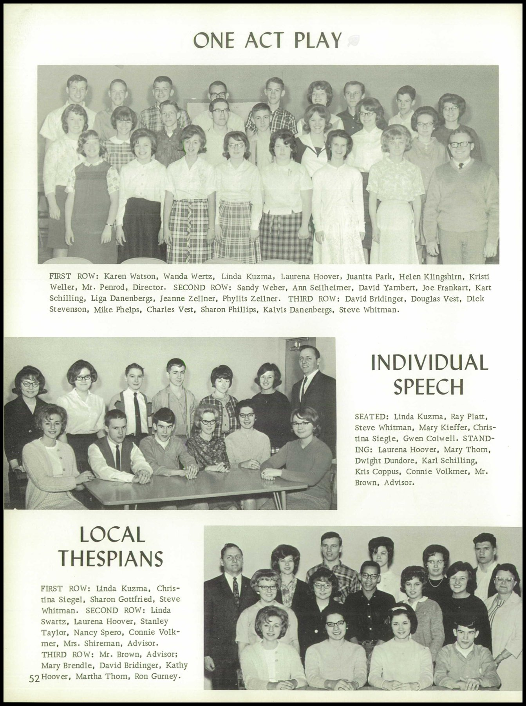
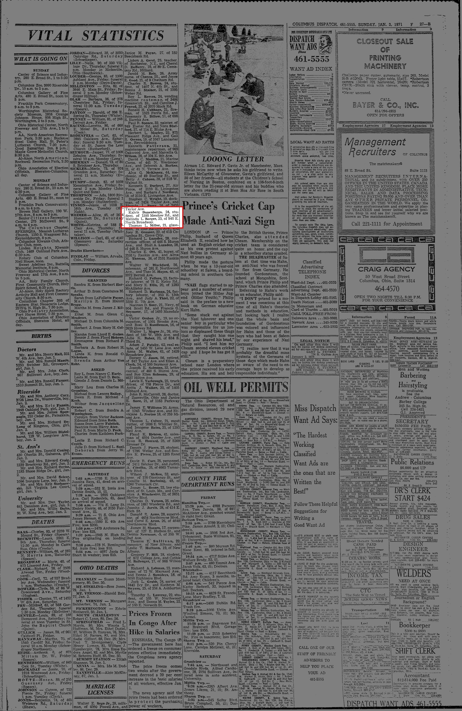
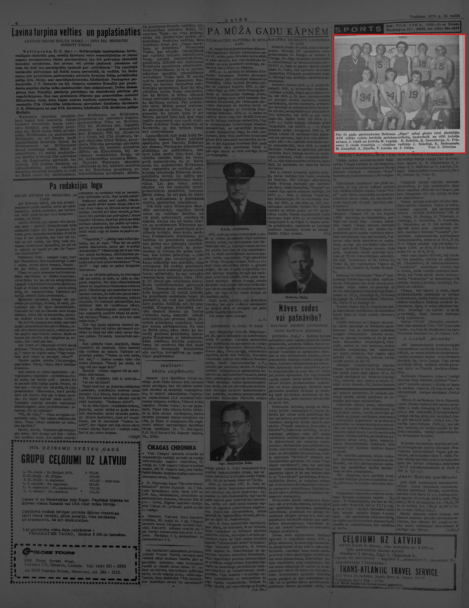

Kalvis Danenbergs b. 1946
Peter's uncle.
Living. As for every living relative on this site, the birth date is given by year only, and no current address is shown.
Also recorded as Kalvis (Melinda); Kalvis Danenberg.
Kalvis Danenbergs was born in 1946 in Haunstetten DP camp, Augsburg, Bavaria, Germany3,4,5, the son of Arvīds Fricis Danenbergs and Elvīra Antonija Sirlaka4,49,50,51,52. He arrived at Boston, Massachusetts, United States on 7 Jul 194935.
Family
- Parents
- Arvīds Fricis Danenbergs 1913–1996 and Elvīra Antonija Sirlaka 1912–2011 documented
- Partner
- Melinda Lee Berger b. 1947
- Children
- Justin Danenbergs b. 1975 documented
Life events
| Event | Date | Place and details |
|---|---|---|
| Born | 1946 | Haunstetten DP camp, Augsburg, Bavaria, Germany Preferred version: His DP record: 1946, Haunstetten. Raimonds's MyHeritage tree (2026) gives 1947, no record cited.3,4,5 |
| Born | 1947 | According to an online family tree6 |
| Arrived | 7 Jul 1949 | Boston, Massachusetts, United States35 |
| Lived | 13 Jul 1949 | Liberty Township, Mercer County, Ohio, United States7,8 |
| Lived | 17 Apr 1950 | Liberty Township, Mercer County, Ohio, United States9 |
| Lived | bet 1951 and 1965 | Tiffin, Ohio, United States10 |
| Education | bet 1955 and 1956 | Bascom, Seneca County, Ohio, United States Attended Third Grade in Mrs. Norma Goodwin's class at Hopewell-Loudon School in Bascom, Seneca County, Ohio during the 1955–1956 school year (school year inferred from the 1956 Scarlet and Grey yearbook; his twin sister Liga Danenbergs was in the parallel Third Grade classroom taught by Mrs.…14 |
| Education | bet 1955 and 1956 | Bascom, Seneca County, Ohio, United States In the third grade at Hopewell-Loudon School, Bascom, Seneca County, Ohio, in the school year 1955–56, photographed in Mrs Norma Goodwin's class. His twin sister Līga is in the parallel third-grade photograph (Mrs Pauline Fruth's class) and their elder brother Peter is in the eighth grade. THIS IS…15 |
| Education | bet 1956 and 1957 | Bascom, Seneca County, Ohio, United States Attended Fourth Grade and played in the elementary Future Bands at Hopewell-Loudon School in Bascom, Seneca County, Ohio during the 1956–1957 school year (school year inferred from the 1957 Hopewell-Loudon High School yearbook), alongside his twin sister Liga Dannenbergs / Liga Danenbergs. On…16 |
| Education | bet 1957 and 1958 | Bascom, Seneca County, Ohio, United States Attended Fifth Grade (Miss Taylor's class) and played in Future Band Members (directed by Mr. Sidnel) at Hopewell-Loudon School in Bascom, Seneca County, Ohio during the 1957–1958 school year (school year inferred from the 1958 Scarlet and Grey yearbook), alongside his twin sister Liga Danenbergs…17 |
| Education | bet 1958 and 1959 | Bascom, Seneca County, Ohio, United States Attended Sixth Grade in Mrs. Kretsinger's classroom at Hopewell-Loudon School in Bascom, Seneca County, Ohio during the 1958–1959 school year (school year inferred from the 1959 Scarlet and Grey yearbook), while his twin sister Liga Danenbergs attended Mrs. Digby's parallel Sixth Grade classroom…18 |
| Education | bet 1959 and 1960 | Bascom, Seneca County, Ohio, United States Attended Seventh Grade (Junior High, Mrs. Fleet's class), sang in the Junior High Chorus, and played on the Junior High Basketball Team (wearing jersey #7, coached by Mr. Sellers; 4–5 season record) at Hopewell-Loudon High School in Bascom, Seneca County, Ohio during the 1959–1960 school year…19 |
| Education | bet 1960 and 1961 | Bascom, Seneca County, Ohio, United States Attended Eighth Grade (Mr. Claugus's class) at Hopewell-Loudon High School in Bascom, Seneca County, Ohio during the 1960–1961 school year (school year inferred from the 1961 Scarlet and Grey yearbook), serving on the Student Council, singing in the Junior High Chorus, and playing on the Junior…20 |
| Education | bet 1961 and 1962 | Bascom, Seneca County, Ohio, United States Attended Ninth Grade (Freshman year) at Hopewell-Loudon High School in Bascom, Seneca County, Ohio during the 1961–1962 school year (school year inferred from the 1962 Scarlet and Grey yearbook), serving as Secretary of the Freshman Class while his twin sister Liga Danenbergs served as Freshman…21 |
| Education | bet 1962 and 1963 | Bascom, Seneca County, Ohio, United States Attended Tenth Grade (Sophomore year) at Hopewell-Loudon High School in Bascom, Seneca County, Ohio during the 1962–1963 school year (school year inferred from the 1963 Scarlet and Grey yearbook), playing on both the Varsity Basketball Team, Reserve Players, and Tournament Team (wearing jersey #34…22 |
| Education | 21 Dec 1962 | Ohio, United States Bellevue Gazette, 22 Dec 1962, p. 8 (basketball report, Hopewell-Loudon vs Thompson; the game date 21 Dec is the sweep's inference, the headline and masthead date line were not separately read). Read by eye: "For Hopewell - Loudon Marvin King scored 17 points, Bob Sendelbach, 16, Dean King, 14,…23 |
| Education | bet 1963 and 1964 | Bascom, Seneca County, Ohio, United States Attended Eleventh Grade (Junior year) at Hopewell-Loudon High School in Bascom, Seneca County, Ohio during the 1963–1964 school year (school year inferred from the 1964 and 1965 Scarlet and Grey yearbooks), where he was inducted into the National Honor Society and National Thespians, competed in…24 |
| Education | bet 1964 and 1965 | Bascom, Seneca County, Ohio, United States Graduated in the Class of 1965 (Twelfth Grade / Senior year, 1964–1965 school year) from Hopewell-Loudon High School in Bascom, Seneca County, Ohio alongside his twin sister Liga Danenbergs. His senior portrait on printed page 21 (leaf 25) of the 1965 Scarlet and Grey yearbook lists his four-year…25 |
| Education | 30 Jan 1964 | Bascom, Seneca County, Ohio, United States Bellevue Gazette, 30 Jan 1964, p. 6 (Seneca County League basketball preview, Hopewell-Loudon squad). Read by eye: "...who could be starters Friday, are as follows: Steve Creeger, 6' forward, Paul Porter, 6' guard, Ed Schubert, 5'10" guard, and Russ Crum, a sophomore who plays in several…26 |
| Note | Jul 1964 | Kalamazoo, Michigan, United States Named in the caption of the group photograph "Jauniešu iesvēte" (youth confirmation) of the Kalamazoo Ev. Lutheran Latvian congregation: "Kalvis Dannenbergs" is the sixth name in the second-row list. The page spells the surname with double n (Dannenbergs). The caption does not use the word…36 |
| Religion | 8 Jul 1964 | Kalamazoo, Michigan, United States Same caption: second row, 6th of 10, "Kalvis Dannenbergs" (double n). Confirmation (iesvēte) class, Kalamazoo Ev. Lutheran Latvian congregation. Date is the issue date; the service date is not given.48 |
| Education | 24 Sep 1964 | Bascom, Seneca County, Ohio, United States Senior at Hopewell-Loudon High School (Bascom, Seneca County, Ohio); named a National Merit Scholarship semifinalist (24 Sep 1964) and received honorable mention among 18,217 Ohio high school seniors in the 1964 Ohio General Scholarship Test (21 Dec 1964); also played varsity basketball for…27 |
| Education | abt 1965 | Bascom, Seneca County, Ohio, United States Performed in the Hopewell-Loudon High School One-Act Play (directed by Mr. Penrod) alongside his twin sister Liga Danenbergs and fellow Class of 1965 seniors (date of ~1965 worked out from the appearance of Class of 1965 seniors Kalvis Danenbergs, Liga Danenbergs, Charles Vest, Mike Phelps, Sandy…28 |
| Note | 3 Jan 1971 | Columbus, Ohio, United States Applied for a marriage licence in Franklin County, Ohio (published 3 January 1971): Kalvis Danenbergs, age 24, student, residing at [address omitted], Columbus, and Melinda L. Berger, age 23, residing at [address omitted], Columbus.37 |
| Note | Apr 1971 | Milwaukee, Milwaukee County, Wisconsin, United States Laiks sports column (article headline per the library: 'Priekšsacīkstes sākušās'), read by eye on the whole page: in a report on a game of Milwaukee Auseklis (the head of the article was not read; the preceding text names Indianapole VV and its scorers K. Šteinmanis /24/, Kalepu /21/, Fricsonu…38 |
| Note | Apr 1971 | Milwaukee, Milwaukee County, Wisconsin, United States Read by eye on the whole page, right-hand column, in a report on the Middle States preliminary round at Milwaukee (the heading was not read; the library has 'PRIEKŠSPĒLES MILVOKOS'): after the volleyball games 'notika arī basketbola priekšsacīkšu spēle, kurā sastapās Milvoku Auseklis ar Čikagas…39 |
| Work | bet 26 Jul 1971 and 16 Nov 2026 | Midland, Clinton County, Ohio, United States Licensed as a Registered Pharmacist (R.Ph.) by the State of Ohio Board of Pharmacy under License Number 03209919, originally issued on 26 July 1971, and continuously maintained in Active status with no board actions for over 55 years (current renewal effective 16 September 2025 through 15…31 |
| Note | 16 May 1973 | Ohio, United States Named third from the left in the front row ("1. rindā no kreisās H. Lapiņš, R. Bedrītis, K. Danenbergs, G. Fricsons") of the photograph of the Dayton "Rīga" basketball team, which won the US Midwest Latvian championship for the first time after a 15-year break. The sweep's second row (Ē. Celmiņš,…40 |
| Note | May 1974 | Ohio, United States Named third from the left in the front row ("1. rindā (no kreisās) H. Lapiņš, R. Bedrītis, K. Danenbergs, M. Liepiņš") of the Dayton "Rīga" team photograph: the team again won the Midwest championship and was to play in the US Latvian finals in Chicago on 25 and 26 May. Second row on the page: "J.…41 |
| Note | 15 Oct 1975 | Midland, Clinton County, Ohio, United States Recorded with wife Melinda Lee Danenbergs as parents of son Justin Erik Danenbergs, born 1975 in Ohio (registered 28 October 1975 under Ohio Birth Certificate Number 1975114837), with a birth announcement for 'Mr Kalvis Danenbergs' of Midland, Ohio published the following day, 16…42 |
| Note | Sep 1983 | Columbus, Ohio, United States Named "K. Danenbergs" as a finalist in the women's-and-mixed-doubles photo caption and, in the text, as the brother partnering his sister L. Šūbacha in the mixed-doubles final (lost 6-3, 3-6, 6-3 to A. and M. Zeps). Initial only; Columbus, Ohio championships. Issue date 24 September 1983, read on…43 |
| Education | 1985 | Ohio, United States Completed his Master of Science thesis at Wright State University titled 'Zinc-Polacin interrelationship during pregnancy and lactation' (1985; xi, 142 leaves : illustrations ; 29 cm, with bibliographical references on leaves 130–142; OCLC 26514659, Alma MMS 991002640989708573, call number Biol…29 |
| Education | Jun 1986 | Ohio, United States Portrait of a man in cap and gown with a caption: in June (1986, from the issue date) he received an M.S. in "farmakoloģijā un bioloģijā" (pharmacology and biology) at Wright State University in Dayton, Ohio; thesis "Micronutrients in Pregnancy". The caption names no year for the degree: "jūnijā"…30 |
| Work | Jul 1986 | Wilmington, Clinton County, Ohio, United States Same caption: "Patlaban strādā Clinton Memorial Hospital, Wilmingtonā, Ohaijo, farmācijas nodaļā kā 'clinical coordinator'" - currently working in the pharmacy department of Clinton Memorial Hospital, Wilmington, Ohio, as "clinical coordinator" (as of 30 July 1986).32 |
| Note | Jul 1986 | Garezers (Latvian centre), near Three Rivers, Michigan, United States Named "K. Danenbergs" in the first row of the Garezers tennis-week photo caption (see the entry for Līga for the full caption) and, in the report below the photograph (read on the page image, second box), as the beaten finalist in the doubles: "Pāru spēlēs nepārspēti palika J. Valdmanis ar E.…44 |
| Work | Jan 1988 | United States Co-authored the peer-reviewed biomedical research article 'Effect of oral zinc on folic acid status in human pregnancy' with M. D. Mukherjee, A. J. Funckes, R. Sundaresan, and J. R. Runkle, published in The Journal of Trace Elements in Experimental Medicine, Vol. 1, January 1988, reporting a…33 |
| Note | Jul 1991 | Garezers (Latvian centre), near Three Rivers, Michigan, United States Named "K. Danenbergs" in the back row of the 1991 Garezers tennis-week photo caption, next to L. Schubacha. Initial only. Issue date 13 July 1991 read on the masthead.45 |
| Work | 1 Aug 2000 | Wilmington, Clinton County, Ohio, United States A registered pharmacist (R.Ph.) at Clinton Memorial Hospital, Wilmington, Ohio. He is thanked by name in the acknowledgements of a peer-reviewed clinical review — "The authors thank Karen Mandell, Pharm.D., University of Cincinnati, and Kalvis Danenbergs, R.Ph., Clinton Memorial Hospital,…34 |
| Lived | 22 May 2007 | Midland, Clinton County, Ohio, United States11,12,13 |
| Note | 24 Mar 2015 | Midland, Clinton County, Ohio, United States On 24 March 2015, by exempt warranty deed (Deed Volume 40, Page 172; Conveyance 177, $0 consideration), Kalvis and Melinda Danenbergs acquired survivorship title to an additional 7.719-acre parcel at [address omitted] in Military Survey 3045, Jefferson Township, Clinton County, Ohio (Parcel…46 |
| Note | 16 Nov 2017 | Midland, Clinton County, Ohio, United States On 16 November 2017, by survivorship deed (Conveyance 876, consideration $9,000), Kalvis and Melinda Danenbergs purchased three additional parcels in Westboro, Jefferson Township, Clinton County, Ohio: (1) Parcel 160-01-15-05-A001-00 (Property ID 6805, US 68, 0.088 acres commercial vacant land in…47 |
Possible records (not confirmed)
Records that may concern him, but don't settle it: an initial and a surname only, a family recollection, or a reading that needs a second look. Each links to the record.
- Marriage 1973~ Clinton County, Ohio, USA: LEAD, not a fact. Kalvis and Melinda both registered to vote in Clinton County on the same day, 28 September 1973, which is the sort of thing a newly married couple does when they set up house; Melinda had left Blanchester High School in 1965 and is recorded under the married name Danenbergs from then on. No marriage record was found. Elvīra Danenbergs's 2011 obituary (already in the tree) names…53 An inference from a shared voter-registration date; no record of a marriage was found.
- Education 1971-04 University of Wisconsin, USA: In the fraternity news of Universitas, in the paragraph "Korporācijā uzņemti:" (admitted to the fraternity) that follows the "Tervetia." paragraph: "Kārlis Danenbergs, pharm., Univ. of Wisconsin", first of four names. The sweep put it under Tālavija ("L! K! A!") and as "Kārlis [Kalvis]"; on the page the paragraph belongs to Tervetia (bold heading "Tervetia." on the paragraph before; the next…54 Surname Danenbergs, "pharm." and the University of Wisconsin (Peter was in Madison in 1970-71; Kalvis became a pharmacist), but the first name on the page is Kārlis, not Kalvis, and no relation is stated. Could be a namesake or a misprint for Kalvis. See lead press-laiks-karlis-danenbergs-tervetia-1971.
- Other 1994-09 Columbus, Ohio, USA: Possibly Kalvis: the men's-doubles report says Kārlis Antons and his father Ēriks beat "Danenbergus (tēvs un dēls)" 6-2, 6-2 before the final. No first names; the identification as Kalvis and his son Justin is an inference (Kalvis plays at the same championships, mixed doubles with L. Šūbacha, lost 10-1 to Hugo and Alekša Hūns; see pl-052 and old 27). See also the entry for Justin.55 Only "Danenbergus (tēvs un dēls)": a father-and-son pair; Kalvis (b. 1946) with son Justin (b. 1975) fits, but another Danenbergs father and son is not excluded on the page.
- Other 1969-03 USA (Middle States preliminary basketball round; Milwaukee Auseklis v. Chicago DV, place not read): Laiks sports column (the library text calls the article 'SPORTS … Basketbolā priekšsacīkstes …'; the heading was not read), read by eye on the whole page: the box score of the Milwaukee Auseklis v. Chicago DV game (83-78 per the library text; the score line itself was not re-read by me): 'Milvoku "Auseklis": E. Venta 8, E. Ezeriņš 13, I. Zallaps 12, V. Čakans 16, Juris Kīns 14, K. Danenbergs 18,…56 Initial + surname only; the same team (Milwaukee Auseklis) carries K. Danenbergs in 1971 (pl-084). In March 1969 Kalvis (b. Nov 1946) would be 22; Universitas lists a 'Kārlis Danenbergs, pharm., Univ. of Wisconsin' (pl-041), consistent with Wisconsin but not proof that K. is Kalvis.
- Other 1984-07 Garezers (Garezerā), Michigan, USA ('tenisa nedēļa'): Printed: 'Vīr. viensp. 1. O. Rēķis, 2. K. Danenbergs.' (men's singles: 1st O. Rēķis, 2nd K. Danenbergs). Only the initial and surname are printed; the same report names L. Šūbacha, so a Danenbergs at the same tournament as his sister is plausible but unproven. Not in the sweep's ledger entry. Year and date are the library's, masthead not read.57 Initial K. plus surname Danenbergs only; no town or relation on the page.
- Other 1987-07 Garezers / USA (tennis report): Short report 'Tenisa nedēļa' at Garezers: 'Šogad tradicionālajā Garezera "tenisa nedēļā" bija mazāk dalībnieku nekā jebkad agrākajos gados — 12.' The Švernu family of Kalamazoo dominated; in the men's open Jānis Šverns beat Kalvi Danenbergu (the final, 6-4, 6-2). NO Šūbacha/Schubach in this report (women's: Ieva Šverna beat Ilze Antone). I did not read the byline with certainty, the report's…58 Only given name and surname in the accusative; no town or relation printed. Same tournament as pl-090/pl-091 (Garezers tennis week, 1984), so a Danenbergs there is plausible but unproven.
- Other 1987 Garezers / USA (tennis report): Read by eye near the top of the right-hand column: 'Vēl Valdmanis pieveica K. Danenbergu (Deitona) 6-2, 6-1' (Valdmanis beat K. Danenbergs of Dayton 6-2, 6-1). A second line, lower in the same column, in the paragraph on the champion pair: 'Meistarpāris vēl uzvarēja I. Švernu ar R. Tiltiņu 6-3, 6-2 un Agitu Hūnu ar K. Danenbergu 7-5, 6-1' (the champion pair also beat Agita Hūns with K.…59 Initial K. and surname only; the town Dayton links him to the Dayton Danenbergs of old 29, but no relation is printed here.
- Other 1988-10 USA (tennis report): 6, DIVL398): 'Zepi pārspēja L. Šūbachu ar Danenbergu 6—2, 6—2'. The partner of L. Šūbacha is printed as 'Danenbergu' (accusative) with NO initial and no town. Given that L. Šūbacha is Līga and that she played with her brother K. Danenbergs in 1983 (pl-046/047), it may be Kalvis, but the page does not say; a human should decide (could also be another Danenbergs, e.g. Pēteris, or a Dayton…60 Surname only; the first initial is not printed. Inferred from the partner being a Danenbergs paired with L. Šūbacha.
- Other 1989-09 Columbus, Ohio, USA (tennis championships): Laiks issue 848456 p.6, zone DIVL393 (library date 30 Sep 1989; masthead and headline not read). The report (the library's text says Columbus, Ohio, early September, ALA tennis championships; only the foot of it was read by eye). Read by eye, lines at the foot of the column: 'Valdmani, pārspējot I. Kalepu un J. Švernu 6-3, 6-3. Pirms tam viņi uzvarēja R. Baumani/M. Jubertu 6-3, 6-3 un…61 Surname only; no initial or town. Plausible Kalvis (K. Danenbergs of Dayton in 1987 played the same championships) but not shown.
- Other 1994-09 Columbus, Ohio, USA (1994 tennis championships, reported in Laiks 11 Jan 1995): Laiks issue 853230 p.6, zone DIVL397; the whole-page overview shows the sports-page article headed 'Latviešu teniss — 1994' (a review of the 1994 tennis season; masthead date NOT read). Read by eye in the participant list (zoom on the left column; the left ~30 characters of each line fell outside my zoom): '[Kolumbusā] spēlēja: Ēriks, Kārlis un [Rūdis?] Antoni, Edgars, Roberts, Ēriks un…62 'Danenbergi' (plural) is read by eye after '…ustīns', so two Danenbergs are listed, but 'Kalvis' is from the library text only; link to Kalvis rests on that and on the father-and-son pair of the 1994 results (pl-053).
Photographs


![FIFTH GRADES | [Lower photograph:] TOP ROW: Kenneth Yambert, Anna Elchert, Kalvis Danenbergs, Roxanna Blankenship, Ro…](../../img/photos/full/1958-hopewell-loudon-grade5-p32.jpg)


![GRADES SIX | [Upper photograph:] ROW FOUR: Robert Brendle, Ronald Crum, Liga Danenbergs, Robert Lowery, Roxanna Blank…](../../img/photos/full/1959-hopewell-loudon-grade6-p36.jpg)

![JUNIOR HIGH | [Upper photograph:] TOP ROW: Robert Kline, Mark Leister, Connie Schultz, Robert Lowery, Ronald Crum, Gl…](../../img/photos/full/1960-hopewell-loudon-jr-high-p35.jpg)


![Eighth Grades | [Left photograph:] ROW SEVEN: Kalvis Danenberg, Richard Hossler, Connie Schultz, a DNA match.](../../img/photos/full/1961-hopewell-loudon-grade8-p34.jpg)


Records
















Sources
- Elvira A. Danenbergs (Nee Sirlaks), Milwaukee Journal Sentinel, 23 June 2011.
Loving mother of Peter (Kathleen), Liga (Wolfhart) Schubach and Kalvis (Melinda). Dear grandmother of Liga, Peter and Justin. Great-grandmother of Mneme.
Named as son in Elvīra's obituary; spouse Melinda.
- MyHeritage family tree 'Dzimta' of Peter's third cousin (his family site), member GEDCOM export of 26 Oct 2026, I500162 (person-6500162), GEDCOM lines 10139–10172.
NAME Kalvis /Danenberg/
His confirmed Smart Match with another tree: Voroņinu dzimtas lapa, https://www.myheritage.lv/person-1002321_OYYV6GENXOY2D7YW6XGE4NH6BKEVORA_OYYV6GENXOY2D7YW6XGE4NH6BKEVORA/kalvis-danenbergs (added by confirming the match).
- Standesamt Augsburg, Form 6, list of births of Latvians, 18 June 1947, DE ITS 2.1.1.3 BY 011 6 LET ZM, DocID 85921424.
25. Danenbergs | Liga | [date] Augsburg | w | Arvids D. | Lettl. | Elvira, geb. Sirlaks | Lettl. | Haunstetten, Lkr. Augsbg. / 26. " | Kalvis | … | m
LIVING. Twins. Parents: Arvids D. and Elvira, née Sirlaks. Two birth certificates per child were enclosed with the list.
- Declaration of Intention No. 134, Arvids Danenbergs, Mercer County Common Pleas, Celina, Ohio, 14 Aug 1950.
Kalvis Danenbergs--M--1946-Augsburg, Germany--Rockford, Ohio / Liga Danenbergs-F--1946-Augsburg, Germany--Rockford, Ohio
From both parents' declarations. The 1950 census has 'Kalvis V'.
- Kalvis Danenbergs, Age 79, Midland, OH.
Overview of Kalvis Danenbergs — Lives in: Midland, Ohio. DOB: 1946
CONFIRMS the Arolsen date and SETTLES the open conflict recorded in data/people/kalvis-danenbergs.yaml. Raimonds's MyHeritage tree gives "1947" with no record cited; the Ohio Secretary of State's voter file, as republished by Ohio Residents Database, gives "DOB: 1946". That is a third independent agreement with the 1946 Arolsen civil registry list and with both parents' 1949 naturalisation declarations.
- MyHeritage family tree 'Dzimta' of Peter's third cousin (his family site), member GEDCOM export of 26 Oct 2026, I500162 (person-6500162), GEDCOM lines 10139–10172.
BIRT · 1947
- Eight Latvian DP's Will Make Homes In Mercer Co., The Journal-Gazette (Fort Wayne, Indiana), 14 July 1949, p. 13.
The family of six includes Arvids Danenbergs. 36. his wife. Elvira. 37, their three children. Peter. 6, a set of twins. Liga and Kalvis. 2>2, and Mrs Dancnherg’s mother. Mrs. Emma Sirlaks
Translation: The family of six includes Arvids Danenbergs, 36, his wife, Elvira, 37, their three children, Peter, 6, a set of twins, Liga and Kalvis, 2 1/2, and Mrs. Danenbergs's mother, Mrs. Emma Sirlaks.
Residing at age 2 1/2 with parents Arvids and Elvira Danenbergs, brother Peter (6), twin sister Liga (2 1/2), and maternal grandmother Emma Sirlaks at the tenant house on the D. R. Smalley farm in Liberty Township, Mercer County, Ohio.
- Household of Arwids F Danenbergs, Liberty Township, Mercer, Ohio.
Kalvis V Danenbergs: Race = White; Birth 1947 @ Germany; Residence 1949; Census 10 April 1950 @ Liberty Township, Mercer, Ohio, United States; RelationshipToHead=Son; Age=3
After landing in Boston on 7 July 1949, he lived with his family on the farm of sponsor Robert M. Hawk in Liberty Township, Mercer County, Ohio (Rockford mailing address), enumerated as 'Kalvis V Danenbergs' (age 3) in the 10 April 1950 US Census.
- 1950 U.S. Census, Liberty Township, Mercer County, Ohio, ED 54-32, Sheet 16, Dwelling 136, Lines 14–22 (Arwids F. Danenbergs Household).
136 — No | No | Danenbergs, Arwids F. | Head | W | M | 37 | Mar | Latvia | No | Wk | 70 | Farm Hand | Farm | P / — , Elvira A | Wife | W | F | 38 | Mar | Latvia | No | H / — , Peter V. | Son | W | M | 7 | Nev | Latvia | No / — , Liga | Daughter | W | F | 3 | Nev | Germany | No / — , Kalvis V | Son | W | M | 3 | Nev | Germany | No / Sirlaks, Emma | Mother-in-law | W | F | 65 | Wid | Latvia | No | H / Balks, Witolds | Brother-in-law | W | M | 29 | Mar | Latvia | No | Wk | 70 | Farm Hand | Farm | P / — , Biruta Z. | Sister-in-law | W | F | 30 | Mar | Latvia | No | H / — , Ilze | Niece | W | F | 4 | Nev | Germany | No
Enumerated on 17 April 1950 in the 1950 U.S. Federal Census in Liberty Township, Mercer County, Ohio (Enumeration District 54-32, Sheet 16, Dwelling 136, '1/10 Mile N on Left' of road north of Dublin, not on a farm, lines 14–22) as 'Kalvis V Danenbergs', age 3, male, white, never married, born in Germany, not a U.S. citizen ('No'), in the nine-person Latvian immigrant household headed by his father 'Arwids F. Danenbergs' (age 37, born Latvia, farm hand working 70 hours the previous week on a farm), with mother 'Elvira A Danenbergs' (age 38, born Latvia, keeping house), older brother 'Peter V. Danenbergs' (age 7, born Latvia), twin sister 'Liga Danenbergs' (age 3, born Germany, sample line 17 recording residence in Germany one year earlier and parents born in Latvia), maternal grandmother 'Emma Sirlaks' (age 65, widow, born Latvia, mother-in-law), uncle 'Witolds Balks' (age 29, born Latvia, brother-in-law, farm hand working 70 hours the previous week), aunt 'Biruta Z. Balks' (age 30, born Latvia, sister-in-law, keeping house), and cousin 'Ilze Balks' (age 4, born Germany, niece, sample line 22). This is the only record giving Kalvis a middle initial 'V'.
- Tiffin, Seneca County, Ohio residence of the Danenberg family (1951–1960).
1953 Danenbergs Elvira Mrs pharm Mercy Hosp h23 Apple / 1956 Danenbergs Elvira (Arvids) pharmacist Mercy Hosp r RD 2 / 1958 Danenbergs Elvira Mrs pharm Mercy Hosp r RD 2 / 1959 Danenbergs Elvira Mrs pharm Mercy Hosp r RD 2 … Third Grade MRS. NORMA GOODWIN Heidelberg College … Sccmzrl [Second] Row: Nickie Chapman, Kalvis Danenbergs.
Moved with his family after about a year on the Hawk farm to Tiffin, Seneca County, Ohio (where his parents are recorded at [address omitted] in 1953 and on their [address omitted] Tiffin farm in 1956–1959 R. L. Polk city directories), attending third grade at Hopewell-Loudon School in nearby Bascom in 1955–1956.
- Clinton County GIS Parcel Records for DANENBERGS KALVIS & MELINDA (Tax District 160, Jefferson Township).
"Property_N": "160-01-15-04-0008-00", "Tax_Year": 2024, "Tax_Distri": "160 JEFFERSON TWP-BLAN.LSD", "Property_A": "[address omitted]", "Classifica": "510 SINGLE FAMILY DWELLING - PLATTED LOT", "Deeded_Nam": "DANENBERGS MELINDA & KALVIS *SD", "Owner_Name": "DANENBERGS MELINDA", "Owner_Stre": "[address omitted]", "Owner_City": "MIDLAND", "Owner_Stat": "OH", "Owner_Post": "45148", "Taxpayer_N": "DANENBERGS KALVIS & MELINDA" … "Lot_Number": "11", "Subdivisio": "WESTBORO LOTS" … "Sales_Date": "05-22-2007", "Conveyance": "311", "Instrument": "SURVIVORSHIP EX" … "Appraise_1": 137400 … "Has_Homest": "Y"
On 22 May 2007, by four exempt survivorship deeds (Conveyances 310, 311, 312, and 313, $0 consideration), Melinda and Kalvis Danenbergs took joint survivorship title to eight parcels in the unincorporated village of Westboro and adjoining Military Survey 3045 in Jefferson Township (Blanchester Local School District, Tax District 160), Clinton County, Ohio (postal address [address omitted], Midland, OH 45148): (1) Parcel 160-01-15-04-0008-00 (Property ID 6777, [address omitted], Original Town of Westboro Lot 11 / Lot 8, single-family dwelling with Homestead and 2.5% owner-occupancy exemptions, 2024 appraised value $137,400, Conveyance 311); (2) Parcel 160-01-15-04-0007-00 (Property ID 6776, [address omitted], Original Town of Westboro Lot 11, appraised $10,400, Conveyance 310); (3) Parcel 160-01-15-04-A009-00 (Property ID 6778, [address omitted], Original Town of Westboro Lot 11, appraised $5,900, Conveyance 311); (4) Parcel 160-01-15-04-B009-00 (Property ID 6779, [address omitted], Original Town of Westboro Lot 11, other residential structures, appraised $4,500, Conveyance 311); (5) Parcel 160-01-16-21-0000-00 (Property ID 6880, [address omitted], 2.0 acres in Military Survey 3045, appraised $14,500, Conveyance 313); (6) Parcel 160-01-16-22-0000-00 (Property ID 6881, [address omitted], 1.966 acres in Military Survey 3045, appraised $14,800, Conveyance 313); (7) Parcel 160-01-16-24-0000-00 (Property ID 6883, [address omitted], Military Survey 3045 Rear of Lot 7, appraised $1,300, Conveyance 310); and (8) Parcel 160-01-16-26-0000-00 (Property ID 6885, [address omitted], 0.5 acres in Military Survey 3045, appraised $6,400, Conveyance 312).
- U.S. Public Records Index Entries for Kalvis Danenbergs (Records 132909435, 80686758, 10353066, 279987847).
Name Kalvis Danenbergs [Danenbergs Kalvis] | Birth Date Nov 1946 | Residence Date 1973-2020 | Address [address omitted] | Residence Midland, Ohio, USA | Postal Code 45148 | Second Residence Date 2015-2017 | Second Address [address omitted] | Second Residence Hillsboro, Ohio, USA | Second Postal Code 45133 | Third Residence Date 2013-2016 | Third Address [address omitted] | Third Residence Bentonville, Arkansas, USA | Third Postal Code 72716
Recorded in the U.S. Public Records Index (Volumes 1 and 2, 1950–1993, and 1994–2019) as residing at [address omitted] (also formatted as [address omitted], [address omitted], and [address omitted]), Midland, Ohio 45148 across 1973–2020 (with specific index snapshots in 1980, 1982, and 1995), born 1946, alongside wife Melinda Lee Danenbergs (born 1947, snapshots in 1982, 1983, 1993, 1994, and 1986–2020). His 1994–2019 public-records compilation also links him in 2013–2016 to 702 SW 8th St, Bentonville, Arkansas (Walmart corporate headquarters) and in 2015–2017 to 540 Harry Sauner Rd, Hillsboro, Highland County, Ohio 45133 (the Hillsboro Walmart Supercenter Pharmacy, 20 miles east of Midland, indicating employment as a Walmart pharmacist during 2013–2017).
- Kalvis Danenbergs — Voting Profile.
Kalvis Danenbergs (age 79) is currently listed at [address omitted], Midland, 45148 Ohio … Kalvis is registered to vote since September 28, 1973 in Clinton County … Voter Status: Active … Precinct Code: Jefferson … Village: Jefferson Township
Registered to vote in Clinton County, Ohio on 28 September 1973 — the same day as Melinda — and still an active registered voter there in 2026. Address [address omitted], Midland, Ohio 45148, in Jefferson Township (precinct "Jefferson", Blanchester Local school district, Ohio congressional district 15). Ohio Residents Database says he is "not affiliated to any political party"; voterrecords.com's street index says "Republican Party" — recorded both ways, since voterrecords returns 403 and only its snippet could be read.
- 1956 Hopewell-Loudon High School Yearbook (Scarlet and Grey), Bascom, Ohio, p. 19 (leaf 22) — Third Grade.
First Row: Mike Depinet, Francis Peter, Mary Stiverson, Linda Brickner, Nancy Barchus, Bonnie Hossler. Second Row: Nickie Chapman, Kalvis Danenbergs, Ken Yambert, Jim Chaney, Mark Leister, Bobby Lowery, Mrs. Goodwin. Third Row: Janis Price, Anna Elchert, Sandy Weber, a DNA match, Maureen Ledwedge, Jerry Reinhart, Brian Arnold, Teddy Groves. Top Row: Ron Crum, Larry Fey, Ronnie Sours, Dick Hossler, Dale Duffy, Carol Brendle, Jeanne Zellner. Absent: a DNA match, Pete Cantu, Delores Posoda, Richard Banks, Carol Jean Brickner, Doris Hites. | Third Grade | MRS. NORMA GOODWIN | Heidelberg College | 19
Attended Third Grade in Mrs. Norma Goodwin's class at Hopewell-Loudon School in Bascom, Seneca County, Ohio during the 1955–1956 school year (school year inferred from the 1956 Scarlet and Grey yearbook; his twin sister Liga Danenbergs was in the parallel Third Grade classroom taught by Mrs. Pauline Fruth on p. 18). Pictured standing second from left in the Second Row in a light collared shirt on printed page 19 (leaf 22) of the 1956 Hopewell-Loudon High School yearbook.
- Scarlet and Grey 1956 — Third Grade, Mrs Norma Goodwin.
Third Grade MRS. NORMA GOODWIN Heidelberg College … Sccmzrl [Second] Row: Nickie Chapman, Kalvis Danenbergs. Ken Yamloert [Lambert], Jim Chaney, Mark Leistcr. Bobby Lowery, Mrs. Goodwin.
In the third grade at Hopewell-Loudon School, Bascom, Seneca County, Ohio, in the school year 1955–56, photographed in Mrs Norma Goodwin's class. His twin sister Līga is in the parallel third-grade photograph (Mrs Pauline Fruth's class) and their elder brother Peter is in the eighth grade. THIS IS THE FIRST DATED EVIDENCE OF WHERE THE FAMILY LIVED IN THE OHIO YEARS: the 1949 manifest landed them at Rockford, Mercer County, in western Ohio, and by the mid-1950s they were at Bascom, in Seneca County, about 80 miles north-east of it.
- 1957 Hopewell-Loudon High School Yearbook (Scarlet and Grey), Bascom, Ohio, pp. 31 (leaf 34, Fourth Grades) and 40 (leaf 43, Future Bands).
Fourth Grades … BOTTOM ROW: Mike Phelps, David Wagner, Francis Peter, Jerry Reinhart, Nicky Chapman, Chris Creeger, David Yambert, Brian Arnold, Daniel Cantu. SECOND ROW: Nancy Barchus, Nancy Stultz, Virginia Fox, Carol Vogel, Connie Schultz, Maureen Ledwedge, Sandra Weber, Linda Brickner, Mary Stiverson. THIRD ROW: Liga Dannenbergs, a DNA match, Joe Frankart, Robert Lowery, Robert Brendle, Richard Hossler, Kenneth Yambert, Kalvis Dannenbergs, Dick Banks, Anna Elchert, Janis Price. | 31 … Future Bands … FIRST ROW: Kalvis Danenbergs, Charlene Bushong, Juanita Park, Connie Schultz, Georgiana Wertz, Sandy Weber, Liga Danenbergs. SECOND ROW: David Hammer, Grant Taylor, Francis Peter, Carol Vogel, Jeanne Zellner, Diane Dicken, Maureen Ledwedge, Jerry Reinhart. THIRD ROW: Chris Creeger, Junior Dundore, Ronnie Sours, Bobby Kline, Connie Stultz, Virginia Fox, Janis Price, Candy Summer. FOURTH ROW: Glen Piper, Mike Phelps, Paul Porter, Bernard Gosche, David Yambert, Kenneth Yambert, Bobby Brendle. | 40
Attended Fourth Grade and played in the elementary Future Bands at Hopewell-Loudon School in Bascom, Seneca County, Ohio during the 1956–1957 school year (school year inferred from the 1957 Hopewell-Loudon High School yearbook), alongside his twin sister Liga Dannenbergs / Liga Danenbergs. On printed page 31 (leaf 34, lower photograph under 'Fourth Grades'), he stands eighth from left in the Third Row (back row) as 'Kalvis Dannenbergs', while twin sister 'Liga Dannenbergs' stands first from left in the Third Row. On printed page 40 (leaf 43, lower photograph under 'Future Bands'), he sits first from left in the First Row holding a woodwind instrument across his lap as 'Kalvis Danenbergs', while twin sister 'Liga Danenbergs' sits seventh from left (far right) in the First Row.
- 1958 Hopewell-Loudon High School Yearbook (Scarlet and Grey), Bascom, Ohio, leaves 36 (Fifth Grades) and 50 (Future Band Members).
FIFTH GRADES … TOP ROW: Kenneth Yambert, Anna Elchert, Kalvis Danenbergs, Roxanna Blankenship, Robert Lowery, Liga Danenbergs, Connie Schultz, a DNA match, Bob Brendle. SECOND ROW: Miss Taylor, Maureen Ledwedge, David Wagner, Dickie Hossler, Sandra Weber, Janis Price, Nicky Chapman, William Carman, Nancy Stultz. THIRD ROW: Mary Stiverson, Chris Creeger, Nancy Barchus, Virginia Fox, Jerry Reinhart, Francis Peter, Davis St. Clair, Carol Vogel, David Yambert, Brian Arnold. ABSENT: Linda Brickner. … FUTURE BAND MEMBERS … ROW THREE: Sheila Haugh, Bobby Frankart, Kalvis Danenburgs, Liga Danenburgs, Paul Porter, Carol Stultz, Shirley Boes, Gene Wertz, Ronald Crum, Steve Seilheimer, Roger Scherger, Juanita Park, Sharon Crammer, a DNA match, Charlene Bushong, Georgianna Wertz, Mr. Sidnel.
Attended Fifth Grade (Miss Taylor's class) and played in Future Band Members (directed by Mr. Sidnel) at Hopewell-Loudon School in Bascom, Seneca County, Ohio during the 1957–1958 school year (school year inferred from the 1958 Scarlet and Grey yearbook), alongside his twin sister Liga Danenbergs / Liga Danenburgs. On printed page 32 (leaf 36, 'FIFTH GRADES', lower photograph), Kalvis Danenbergs stands third from left in the Top Row and Liga Danenbergs stands sixth from left in the Top Row. On printed page 46 (leaf 50, 'FUTURE BAND MEMBERS'), Kalvis Danenburgs stands third from left in Row Three and Liga Danenburgs stands fourth from left in Row Three.
- 1959 Hopewell-Loudon High School Yearbook (Scarlet and Grey), Bascom, Ohio, p. 36 (leaf 40) — Grades Six.
GRADES SIX | [Upper photograph:] ROW FOUR: Robert Brendle, Ronald Crum, Liga Danenbergs, Robert Lowery, Roxanna Blankenship, Glen Piper, Ronald Sours. | [Lower photograph:] ROW ONE: Brian Arnold, Chris Creeger, David Yambert, David St. Clair, Joseph Frankart, William Carmen, Carol Vogel, Virginia Fox, Nancy Barchus, Mrs. Kretsinger. ROW TWO: Nancy Stultz, Carol Brendle, Maureen Ledwedge, Michael Phelps, David Wagner, James Omlor, Charlene Bushong, Jacquelyn Dieter, Diane Dicken. ROW THREE: Constance Schultz, Juanita Park, Mark Leister, Richard Hossler, Kalvis Danenbergs, Georgianna Wertz, Gary Braman, Stan Rosenblatt, Paul Porter. Absent: Claire Magers, Noemi Uballe. | 36
Attended Sixth Grade in Mrs. Kretsinger's classroom at Hopewell-Loudon School in Bascom, Seneca County, Ohio during the 1958–1959 school year (school year inferred from the 1959 Scarlet and Grey yearbook), while his twin sister Liga Danenbergs attended Mrs. Digby's parallel Sixth Grade classroom on the same page. On printed page 36 (leaf 40, 'GRADES SIX', lower photograph), Kalvis Danenbergs stands fifth from left (center) in Row Three (top row), while Liga Danenbergs stands third from left in Row Four of the upper photograph.
- 1960 Hopewell-Loudon High School Yearbook (Scarlet and Grey), Bascom, Ohio, leaf 39 (Junior High), p. 50 (leaf 54, Jr. High Chorus), and p. 66 (leaf 70, Junior High Basketball Team).
JUNIOR HIGH | TOP ROW: Robert Kline, Mark Leister, Connie Schultz, Robert Lowery, Ronald Crum, Glen Piper, Kalvis Danenbergs, John Fox, Richard Burton, Georgianna Wertz, a DNA match, Ronnie Sours, Timothy Coleman. … SECOND ROW: Claire Magers, Geraldine Filliator, a DNA match, Sandra Weber, Jeanne Zellner, Candy Summer, Liga Danenbergs, Janis Price, Barbara Burlile, Diane Dicken, Nancy Stultz, Mary Stiverson. … Teacher, Mrs. Fleet. … JR. HIGH CHORUS … ROW FIVE: David Yambert, Richard Hostler, Mike Phelps, Gary Bramen, Charles Vest, Cris Creeger, David St. Clair, Paul Porter, Steve Wireman, Mark Leister, Joe Frankhart, Kenneth Yambert, Kalvis Danenburgs. | 50 … JUNIOR HIGH BASKETBALL TEAM | BACK ROW: Mr. Sellers, Gene Wertz, Edwin Schubert, Robert Stiverson, Kalvis Dannenberg, Steve Seilheimer, Ronnie Sours, Paul Porter, Paul Wise. FRONT ROW: David Yambert, Kenneth Yambert, Marty Puffenberger, Danny Chester, Gary Bramen, Dick Hossler, Charles Vest. | 66
Attended Seventh Grade (Junior High, Mrs. Fleet's class), sang in the Junior High Chorus, and played on the Junior High Basketball Team (wearing jersey #7, coached by Mr. Sellers; 4–5 season record) at Hopewell-Loudon High School in Bascom, Seneca County, Ohio during the 1959–1960 school year (school year inferred from the 1960 Scarlet and Grey yearbook). Pictured on leaf 39 ('JUNIOR HIGH', upper photograph, Top Row, seventh from left, with twin sister Liga Danenbergs in the Second Row, seventh from left), printed page 50 (leaf 54, 'JR. HIGH CHORUS', Row Five, thirteenth from left / far right as 'Kalvis Danenburgs', with twin sister Liga Danenburgs at far right of Row Four), and printed page 66 (leaf 70, 'JUNIOR HIGH BASKETBALL TEAM', Back Row, fifth from left in jersey #7 as 'Kalvis Dannenberg', with twin sister Liga Dannenberg pictured below among the Junior High Cheerleaders).
- 1961 Hopewell-Loudon High School Yearbook (Scarlet and Grey), Bascom, Ohio, pp. 6 (Student Council), 34 (Eighth Grades), 52 (Junior High Chorus), and 64 (Junior High Basketball Team).
Student Council | SEATED: Pete Miles, Betty Berkheimer, Georgia Forney, Ray Vogel, Rose Berrier, Weldon Feindel, Kalvis Danenberg, Mr. Booth. STANDING: Terry Nigh, Judy Myers, Susan Shock, Sandy Weber, Ed Schubert. | 6 … Eighth Grades | ROW SEVEN: Kalvis Danenberg, Richard Hossler, Connie Schultz, a DNA match. Teacher, Mr. Claugus. | 34 … Junior High Basketball Team | BACK ROW: Jim Omlor, Paul Porter, Ronnie Sours, Ronald Crum, Kalvis Danenbergs, Richard Henderson, Dick Hossler, Mr. Adams. FRONT ROW: Jack Berrier, Kenneth Yambert, Mike Phelps, Terry Nye, Chris Creeger, Charles Vest, David Yambert. | The Junior High ended the 1960-61 season with a 11-2 win-loss record. They were runner-up in the tournament, losing out in the finals to Bloomville's Junior High. | 64
Attended Eighth Grade (Mr. Claugus's class) at Hopewell-Loudon High School in Bascom, Seneca County, Ohio during the 1960–1961 school year (school year inferred from the 1961 Scarlet and Grey yearbook), serving on the Student Council, singing in the Junior High Chorus, and playing on the Junior High Basketball Team (wearing jersey #12, coached by Mr. Adams; 11–2 season record and county tournament runner-up to Bloomville). Pictured on printed page 6 (leaf 10, 'Student Council', seated seventh from left next to advisor Mr. Booth), printed page 34 (leaf 38, 'Eighth Grades', left photograph, Row Seven, first from left, with twin sister Liga Danenberg in Row Seven of Mrs. Fleet's Eighth Grade on the right), printed page 52 (leaf 56, 'Junior High Chorus', Row Three, eighteenth from left), and printed page 64 (leaf 68, 'Junior High Basketball Team', Back Row, fifth from left in jersey #12, with twin sister Liga Dannenberg pictured below among the Junior High Cheerleaders).
- 1962 Hopewell-Loudon High School Yearbook (Scarlet and Grey), Bascom, Ohio, pp. 41 (Freshmen), 52 (Individual Speakers), 58 (Senior High Chorus), 73 (Reserve Squad), and 75 (High School Track Team).
Freshmen … ROW FOUR: Ronald Bird, Charles Halcomb, Richard Hossler, Robert Kline, Kalvis Danenbergs, Robert Lowery, Robert Faber, Robert Arnold, Ronald Crum, David Fuhrer, Jim Omlor, Mark Leister, a DNA match, Mike Phelps, Ken Yambert. | President . . . Liga Danenbergs | Vice-President . . . a DNA match | Secretary . . . Kalvis Danenbergs | Treasurer . . . Juanita Park | Student Council . . . Dick Hossler, Peggy Walter | Missing: Reporter . . . Nick Chapman | 41 … Individual Speakers | ROW TWO: Priscilla Haugh, Martha Deitrick, John Meredith, Jack Scaife, Kalvis Danenbergs. … | 52 … Reserve Squad | ROW ONE: Paul Wise, Jim Omlor, Kalvis Danenbergs, Steve Creeger, Steve Seilheimer, Paul Porter, Bob Stiverson. … | 73 … High School Track Team … ROW TWO: Dean King, Tom Porter, Jim Piper, Robert Lowery, Steve Wireman, Dave Fuhrer, Steve Creeger, Pete Miles, Bill Best, Kalvis Danenberg, Kenneth Yambert. | 75
Attended Ninth Grade (Freshman year) at Hopewell-Loudon High School in Bascom, Seneca County, Ohio during the 1961–1962 school year (school year inferred from the 1962 Scarlet and Grey yearbook), serving as Secretary of the Freshman Class while his twin sister Liga Danenbergs served as Freshman Class President, competing in Individual Speakers, singing in the Senior High Chorus, playing on the Reserve Squad basketball team (wearing jersey #35), and competing on the High School Track Team. Pictured on printed page 41 (leaf 45, 'Freshmen', both in the class group in Row Four, fifth from left, and in the Freshman Class Officers portrait standing at left beside President Liga Danenbergs, while Student Council representative Dick Hossler stands at right; the officers caption lists titles without a left-to-right key), printed page 52 (leaf 56, 'Individual Speakers', Row Two, fifth from left), printed page 58 (leaf 62, 'Senior High' Chorus, Row Four, third from left), printed page 73 (leaf 77, 'Reserve Squad', Row One seated, third from left in jersey #35), and printed page 75 (leaf 79, 'High School Track Team', Row Two, tenth from left in letter jacket).
- 1963 Hopewell-Loudon High School Yearbook (Scarlet and Grey), Bascom, Ohio, pp. 40 (Sophomores), 55 (Individual Basketball), 56 (Varsity Team), 58 (Reserve Players), 59 (Tournament Team), leaf 64 (Varsity Track Team), and p. 71 (Chorus).
KALVIS DANENBERGS | Kalvis was a good defensive player this year; he helped win many a game. As Kalvis is only a sophomore, he'll have two more years to help the team. | 55 … VARSITY TEAM | ROW ONE: Steve Durst, Jim Omlor, Gene Wertz, Steve Seilheimer, Ronnie Crum, Paul Porter, Kalvis Danenbergs, Coach Duane Warns. ROW TWO: Bob Stiverson, Dave Veres, Ed Schubert, Steve Creeger, Dean King, Bob Sendelbach, Marvin King. | 56 … TOURNAMENT TEAM | Dave Veres, Bob Sendelbach, Gene Wertz, Steve Seilheimer, Steve Creeger, Dean King, Ronnie Crum, Paul Porter, Kalvis Danenbergs, Ed Schubert, Jim Omlor, Marv King, Coach Duane Warns. | 59
Attended Tenth Grade (Sophomore year) at Hopewell-Loudon High School in Bascom, Seneca County, Ohio during the 1962–1963 school year (school year inferred from the 1963 Scarlet and Grey yearbook), playing on both the Varsity Basketball Team, Reserve Players, and Tournament Team (wearing jersey #34 under Coach Duane Warns), competing on the Varsity Track Team, and singing in the High School Chorus. Featured in an individual basketball portrait on printed page 55 (leaf 59) captioned: 'KALVIS DANENBERGS — Kalvis was a good defensive player this year; he helped win many a game. As Kalvis is only a sophomore, he'll have two more years to help the team.' Also pictured on printed page 40 (leaf 44, 'SOPHOMORES', Fifth Row, fifth from left), printed page 56 (leaf 60, 'VARSITY TEAM', Row One, seventh from left in jersey #34), printed page 58 (leaf 62, 'RESERVE PLAYERS', Row One kneeling, fourth from left in jersey #34), printed page 59 (leaf 63, 'TOURNAMENT TEAM', ninth from left in warm-up jacket), leaf 64 (unnumbered page, p. 60 inferred, 'VARSITY TRACK TEAM', Row Two standing, tenth from left / far right in suit and tie), and printed page 71 (leaf 75, 'CHORUS', Fifth Row, sixth from left).
- Bellevue Gazette, 22 December 1962, p. 8 (Hopewell-Loudon vs Thompson basketball), Bellevue Gazette, 22.12.1962, p. 8; file bellevue_gazette_usa_ohio_bellevue_19621222_english_8.
For Hopewell - Loudon Marvin King scored 17 points, Bob Sendelbach, 16, Dean King, 14, Calvin Danenberg, 13, Ed Schubert, 8, and Steve Creeger, 3
Translation: (English)
Bellevue Gazette, 22 Dec 1962, p. 8 (basketball report, Hopewell-Loudon vs Thompson; the game date 21 Dec is the sweep's inference, the headline and masthead date line were not separately read). Read by eye: "For Hopewell - Loudon Marvin King scored 17 points, Bob Sendelbach, 16, Dean King, 14, Calvin Danenberg, 13, Ed Schubert, 8, and Steve Creeger, 3". Page prints "Calvin Danenberg" (no s). The game was played at Thompson School (the printed sub-article `Thompson Defeated`: `In a Seneca Co. League contest played at Thompson School Friday night, the Tigers were defeated 71 - 63 by the visiting Hopewell - Loudon quintet`), so `place` is the venue; Hopewell-Loudon School at Bascom, where he went to school, is his team's home and is not named on the page. Identification with Kalvis is by the later items (Hopewell-Loudon, same surname, Seneca County) and is not stated on the page.
- 1964 Hopewell-Loudon High School Yearbook, leaf 45 & pp. 49, 50, 54, 61 & 1965 Hopewell-Loudon High School Yearbook, p. 66 (1964 Regional Entry).
INDIVIDUAL SPEAKERS | SEATED: Margie Miller, Connie Volkmer, Jeanne Zellner, Susie Shock, Karen Weller, Christina Siegel. STANDING: Mrs. Wertz, David Hammer, Charlie Vest, Kalvis Danenbergs, Jim Schreiner. | HONOR SOCIETY | SEATED: Diane Sperow, Mary Garcia, Sharon Cramer, Shirley Boes, Kathleen Bintz, Karen Weller, Martha Depinet, Darlene Brickner. STANDING: Judy Swartz, Candy Summer, Liga Danenbergs, Paul Porter, Charlie Vest, Steve Seilheimer, Tim Brickner, Ed Schubert, Kalvis Danenbergs, David Hammer, Jeanne Zellner, Sandy Weber, Helen Klingshirn. | 49 … THESPIANS | Seated: Kalvis Danenberg, Jim Forney. Standing: Mary Wilson, Susz Shock, Shirley Boes, Kathleen Bintz, Mrs. Shireman. | 50 … JUNIOR MIXED OCTET | Kalvis Danenbergs, Ronnie Sours, Candy Summer, Liga Danenbergs, Sandy Weber, Dave Yambert, Chris Creeger. | 61 … 1964 Regional Entry | KNEELING: Nick Chapman, James Omlor, Kalvis Danenbergs, Ronald Crum, Paul Porter, Ed Schubert, Robert Stiverson. … The Conquering Quintet | James Omlor, Paul Porter, Ronald Crum, Kalvis Danenbergs, Ed Schubert. | 66
Attended Eleventh Grade (Junior year) at Hopewell-Loudon High School in Bascom, Seneca County, Ohio during the 1963–1964 school year (school year inferred from the 1964 and 1965 Scarlet and Grey yearbooks), where he was inducted into the National Honor Society and National Thespians, competed in Individual Speakers, sang in the Senior Chorus and the seven-voice Junior Mixed Octet alongside his twin sister Liga Danenbergs, and played as a starting five ('The Conquering Quintet') member on the 1964 Hopewell-Loudon Varsity Basketball Team that won the Sectional and District tournaments (after finishing runner-up to Attica in overtime in the County Tournament) and advanced to the 1964 Regional Tournament under head coach Duane Warns and assistant coach Robert Eilert. Pictured in the 1964 yearbook on leaf 45 (p. 41 inferred, 'JUNIORS', Fifth Row, fourth from left), printed page 49 (leaf 53, 'INDIVIDUAL SPEAKERS', standing fourth from left, and 'HONOR SOCIETY', standing ninth from left), printed page 50 (leaf 54, 'THESPIANS', seated first from left), printed page 54 (leaf 58, 'SENIOR' Chorus, Fourth Row, third from left), and printed page 61 (leaf 65, 'JUNIOR MIXED OCTET', standing first from left), as well as in the 1965 yearbook on printed page 66 (leaf 70, '1964 Regional Entry', kneeling third from left in home jersey #34, and 'The Conquering Quintet', standing fourth from left in road jersey #35).
- 1965 Hopewell-Loudon High School Yearbook (Scarlet and Grey), Bascom, Ohio, pp. 6, 21 (Senior Portrait), 54, 55, 56, 62, 64 (Senior Forward), 66, and 79.
KALVIS DANENBERGS | Basketball 1,2,3,4 | Track 1,2,3,4 | Speech Contest 1,3,4 | National Thespian 3,4 | Chorus 1,2,3,4 | All-County Chorus 2,3 | Honor Society 3,4 | Annual Staff 4 | Science Club 3,4 | National Merit Semifinalist 4 | Latin Club 2,3 | Spanish Club 1,2. | 21 … Annual Staff | Editor . . . David Hammer | Assistant Editor . . . Kalvis Danenbergs … | 6 … Honor Society | FIRST ROW: Jeanne Zellner, Treasurer; Kalvis Danenbergs, Vice President; Charles Vest, President; Candy Summer, Reporter, Liga Danenbergs, Secretary. … | 54 … KALVIS DANENBERGS | Senior Forward | Kal had to be the best "sixth" man in the state. He came in to spark the Chieftains to many victories with his deadly shooting. Although not playing full time, he was one of the team's leading rebounders. Kal was also an excellent defensive player. | 64
Graduated in the Class of 1965 (Twelfth Grade / Senior year, 1964–1965 school year) from Hopewell-Loudon High School in Bascom, Seneca County, Ohio alongside his twin sister Liga Danenbergs. His senior portrait on printed page 21 (leaf 25) of the 1965 Scarlet and Grey yearbook lists his four-year high school summary: 'KALVIS DANENBERGS — Basketball 1,2,3,4; Track 1,2,3,4; Speech Contest 1,3,4; National Thespian 3,4; Chorus 1,2,3,4; All-County Chorus 2,3; Honor Society 3,4; Annual Staff 4; Science Club 3,4; National Merit Semifinalist 4; Latin Club 2,3; Spanish Club 1,2.' In his senior year he served as Assistant Editor of the 1965 yearbook ('Annual Staff', p. 6, leaf 10, seated fifth from left), Vice President of the National Honor Society ('Honor Society', p. 54, leaf 58, seated second from left while twin sister Liga served as Secretary), member of the Science Club and Individual Speech team (p. 55, leaf 59), National Thespian (p. 56, leaf 60, standing first from left), Senior Chorus member (p. 79, leaf 83, Row Five, seventh from left), and Senior Forward (#34) on the Varsity Basketball Team (p. 62, leaf 66, Second Row, sixth from left), with an individual portrait on page 64 (leaf 68) captioned: 'KALVIS DANENBERGS | Senior Forward | Kal had to be the best "sixth" man in the state. He came in to spark the Chieftains to many victories with his deadly shooting. Although not playing full time, he was one of the team's leading rebounders. Kal was also an excellent defensive player.'
- Bellevue Gazette, 30 January 1964, p. 6 (Seneca County League basketball preview), Bellevue Gazette, 30.01.1964, p. 6; file bellevue_gazette_usa_ohio_bellevue_19640130_english_6.
Another good point gainer on the squad is Carl Danenberg
Translation: (English)
Bellevue Gazette, 30 Jan 1964, p. 6 (Seneca County League basketball preview, Hopewell-Loudon squad). Read by eye: "...who could be starters Friday, are as follows: Steve Creeger, 6' forward, Paul Porter, 6' guard, Ed Schubert, 5'10" guard, and Russ Crum, a sophomore who plays in several positions. Another good point gainer on the squad is Carl Danenberg" (all legible on the page image; sweep's bracket "[Hopewell-Loudon]" is its own insertion). Page prints "Carl Danenberg" (broken across two lines, no period). The page puts Friday's game at Thompson School; Bascom is printed only for the earlier meeting ("the Warriors, at Bascom defeated the Thompson Tigers, 86 - 55"), so the place Bascom is the team's home, not the game. Identification with Kalvis is inferred, not on the page.
- Results Of 1964 Scholarship Tests, The Blade (Toledo, Ohio), 21 December 1964, p. 8; and 113 In Area Reach Scholarship Semifinals, The Blade (Toledo, Ohio), 24 September 1964, p. 12.
Toledo and area students receiving honorable mentions and their schools were: ... Kalvis Danenbergs. Hope Loudon: Ronald B. Diegle, Marion: Nancy E. Heffner, Start; David E. Hammer. Hope Loudon;
Translation: Toledo and area students receiving honorable mentions and their schools were: ... Kalvis Danenbergs, Hope-Loudon; Ronald B. Diegle, Marion; Nancy E. Heffner, Start; David E. Hammer, Hope-Loudon;
Senior at Hopewell-Loudon High School (Bascom, Seneca County, Ohio); named a National Merit Scholarship semifinalist (24 Sep 1964) and received honorable mention among 18,217 Ohio high school seniors in the 1964 Ohio General Scholarship Test (21 Dec 1964); also played varsity basketball for Hopewell-Loudon (9 Feb 1964).
- 1966 Hopewell-Loudon High School Yearbook (Scarlet and Grey), Bascom, Ohio, p. 52 (leaf 56) — One Act Play.
ONE ACT PLAY | FIRST ROW: Karen Watson, Wanda Wertz, Linda Kuzma, Laurena Hoover, Juanita Park, Helen Klingshirn, Kristi Weller, Mr. Penrod, Director. SECOND ROW: Sandy Weber, Ann Seilheimer, David Yambert, Joe Frankart, Kart Schilling, Liga Danenbergs, Jeanne Zellner, Phyllis Zellner. THIRD ROW: David Bridinger, Douglas Vest, Dick Stevenson, Mike Phelps, Charles Vest, Sharon Phillips, Kalvis Danenbergs, Steve Whitman. | 52
Performed in the Hopewell-Loudon High School One-Act Play (directed by Mr. Penrod) alongside his twin sister Liga Danenbergs and fellow Class of 1965 seniors (date of ~1965 worked out from the appearance of Class of 1965 seniors Kalvis Danenbergs, Liga Danenbergs, Charles Vest, Mike Phelps, Sandy Weber, Jeanne Zellner, and Juanita Park in the photograph published in the 1966 yearbook after the 1965 yearbook deadline), pictured on printed page 52 (leaf 56, 'ONE ACT PLAY') of the 1966 Hopewell-Loudon High School yearbook, where Kalvis Danenbergs stands seventh from left (second from right) in the Third Row and Liga Danenbergs stands sixth from left in the Second Row.
- Zinc-Polacin interrelationship during pregnancy and lactation / Kalvis Danenbergs (M.S. Wright State University 1985).
"title": [ "Zinc-Polacin interrelationship during pregnancy and lactation " ], "format": [ "xi, 142 leaves : illustrations ; 29 cm" ], "identifier": [ "$$COCLC$$V(OCoLC)26514659" ], "creationdate": [ "1985" ], "creator": [ "Danenbergs, Kalvis$$QDanenbergs, Kalvis" ], "mms": [ "991002640989708573" ], "dissertation": [ "M.S. Wright State University 1985" ], "genre": [ "Academic theses" ] … "mesh": [ "Zinc -- administration & dosage", "Folic Acid -- administration & dosage", "Lactation", "Pregnancy", "Academic Dissertation" ] … "notes": [ "M.S. Wright State University 1985", "Includes bibliographical references (leaves 130-142)" ] … "callNumber": "Biol D179z 1985", "mainLocation": "Southwest Ohio Regional Depository"
Completed his Master of Science thesis at Wright State University titled 'Zinc-Polacin interrelationship during pregnancy and lactation' (1985; xi, 142 leaves : illustrations ; 29 cm, with bibliographical references on leaves 130–142; OCLC 26514659, Alma MMS 991002640989708573, call number Biol D179z 1985 at the Southwest Ohio Regional Depository). Indexed under MeSH headings 'Zinc -- administration & dosage', 'Folic Acid -- administration & dosage', 'Lactation', 'Pregnancy', and 'Academic Dissertation' (confirming 'Polacin' in the catalog title is a typographical transcription of 'Folacin' / folic acid, and providing the exact bound thesis record behind the July 1986 Laiks notice that summarized his thesis topic as 'Micronutrients in Pregnancy').
- Kalvis Danenbergs (portrait and caption), Laiks, 30 July 1986, p. 3, Laiks, Wednesday 30 July 1986 (masthead "Trešdien, 1986. g. 30. jūlijā" read on the page), p. 3, Periodika issue 870917, article DIVL146, doc 61988005. The portrait caption sits at the foot of the left column, under the end of Anšlavs Eglītis's film review..
Kalvis Danenbergs jūnijā Wright State universitātē Deitonā, Ohaijo, ieguvis M.S. gradu farmakoloģijā un bioloģijā. Zinātniskais darbs bija par "Micronutrients in Pregnancy". Patlaban strādā Clinton Memorial Hospital, Wilmingtonā, Ohaijo, farmācijas nodaļā kā "clinical coordinator".
Translation: Kalvis Danenbergs in June at Wright State University in Dayton, Ohio, earned an M.S. degree in pharmacology and biology. His scientific work was on "Micronutrients in Pregnancy". He now works at Clinton Memorial Hospital, Wilmington, Ohio, in the pharmacy department as "clinical coordinator".
Portrait of a man in cap and gown with a caption: in June (1986, from the issue date) he received an M.S. in "farmakoloģijā un bioloģijā" (pharmacology and biology) at Wright State University in Dayton, Ohio; thesis "Micronutrients in Pregnancy". The caption names no year for the degree: "jūnijā" is June of the issue year, 1986. The sweep's quote omitted "Ohaijo," after "Deitonā"; otherwise it was exact.
- License Look Up: KALVIS DANENBERGS RPH — Pharmacist License 03209919.
KALVIS DANENBERGS RPH … Status Active | Board Board of Pharmacy | License Type Pharmacist | License Number 03209919 | License Issue Date 7/26/71 | License Effective Date 9/16/25 | License Expiration Date 9/15/27 | City MIDLAND | State OH | Country United States | Board Action No
Licensed as a Registered Pharmacist (R.Ph.) by the State of Ohio Board of Pharmacy under License Number 03209919, originally issued on 26 July 1971, and continuously maintained in Active status with no board actions for over 55 years (current renewal effective 16 September 2025 through 15 September 2027, city of record Midland, Ohio). His son Justin Erik Danenbergs, R.Ph. (License No. 03223586, issued 5 August 1999, city of record Columbus, Ohio) and daughter-in-law Barbara Lynn Danenbergs, R.Ph. (License No. 03219647, issued 27 October 1992, city of record Columbus, Ohio) also hold active Ohio Board of Pharmacy Pharmacist licenses.
- Kalvis Danenbergs (portrait and caption), Laiks, 30 July 1986, p. 3, Laiks, Wednesday 30 July 1986 (masthead "Trešdien, 1986. g. 30. jūlijā" read on the page), p. 3, Periodika issue 870917, article DIVL146, doc 61988005. The portrait caption sits at the foot of the left column, under the end of Anšlavs Eglītis's film review..
Patlaban strādā Clinton Memorial Hospital, Wilmingtonā, Ohaijo, farmācijas nodaļā kā "clinical coordinator".
Translation: Currently works at Clinton Memorial Hospital, Wilmington, Ohio, in the pharmacy department as "clinical coordinator".
Same caption: "Patlaban strādā Clinton Memorial Hospital, Wilmingtonā, Ohaijo, farmācijas nodaļā kā 'clinical coordinator'" - currently working in the pharmacy department of Clinton Memorial Hospital, Wilmington, Ohio, as "clinical coordinator" (as of 30 July 1986).
- Mukherjee MD, Danenbergs K, Funckes AJ, Sundaresan R, Runkle JR. Effect of oral zinc on folic acid status in human pregnancy. J Trace Elem Exp Med 1988; 1.
Mukherjee MD, Danenbergs K, Funckes AJ, Sundaresan R, Runkle JR. Effect of oral zinc on folic acid status in human pregnancy. J Trace Elem Exp Med, 1 (1988) … Effect of oral zinc on folic acid status in human pregnancy. January 1988. M.D. Mukherjee · K. Danenbergs · A.J. Funckes; [...] J.R. Runkle. This two-part study was undertaken to investigate the relationship between zinc (Zn) and folic
Co-authored the peer-reviewed biomedical research article 'Effect of oral zinc on folic acid status in human pregnancy' with M. D. Mukherjee, A. J. Funckes, R. Sundaresan, and J. R. Runkle, published in The Journal of Trace Elements in Experimental Medicine, Vol. 1, January 1988, reporting a two-part study undertaken to investigate the relationship between zinc (Zn) and folic acid in human pregnancy.
- Appropriate Prescribing of Oral Beta-Lactam Antibiotics — Acknowledgements.
The authors thank Karen Mandell, Pharm.D., University of Cincinnati, and Kalvis Danenbergs, R.Ph., Clinton Memorial Hospital, Wilmington, Ohio, for editorial assistance with the manuscript.
A registered pharmacist (R.Ph.) at Clinton Memorial Hospital, Wilmington, Ohio. He is thanked by name in the acknowledgements of a peer-reviewed clinical review — "The authors thank Karen Mandell, Pharm.D., University of Cincinnati, and Kalvis Danenbergs, R.Ph., Clinton Memorial Hospital, Wilmington, Ohio, for editorial assistance with the manuscript" — in American Family Physician, 1 August 2000 (Holten KB, Onusko EM, "Appropriate Prescribing of Oral Beta-Lactam Antibiotics", AFP 62(3):611–620, since cited over 330 times). Wilmington is the county seat of Clinton County, nine miles from his house at Midland. His son Justin is also a pharmacist.
- Manifest of In-bound Passengers (Aliens), No. 27, USAT General Blatchford, Bremerhaven 28 June 1949 → Boston 7 July 1949, NAID 76075234, image 80 of 651, object 76075314, file 41253_B124264-01101.jpg, lines 4–8.
DANENBERGS Arvids Rockford, Ohio 36 Ma Md I-849016 Latvian … ADMITTED JUL 7 1949 BOSTON, MASS.
LIVING. Manifest 27, lines 7 (Kalvis, I-849019) and 8 (Līga, I-849020); age 2; IRO roll nos. 611–612, country of birth Germany.
- Jauniešu iesvēte Kalamazū ev. lut. latv. draudzē (group photograph and caption), Laiks, 8 July 1964, p. 5, Laiks, 08.07.1964 (Periodika issue 1028428, article DIVL374, doc 72981163), viewer p. 5. The photograph sits under the "Detroitas chronika" / "Grand Rapidu chronika" columns at the foot of the page, inside zone DIVL374. The issue date is Periodika's; I did not read the masthead..
Jauniešu iesvēte Kalamazū ev. lut. latv. draudzē. 1. rindā no kreisās Līga Dannenberga, ērģelnieks prof. Ā. Ābele, māc. K. Zuika, māc. J. Meisters, māc. A. Piebalgs, māc. E. Rūsa, dr. pr-ks J. Salna un Ilze Lejiņa; otrā rindā Jānis Aivars, Mārtiņš Tolis, Maija Jirgene, Valdis Bormanis, Dace Rolle, Kalvis Dannenbergs, Liene Rava, Jānis Kirulis, Ilze Balka un Jānis Zuika A. Purmaļa foto
Translation: Youth confirmation in the Kalamazoo Ev. Luth. Latvian congregation. First row from the left Līga Dannenberga, organist prof. Ā. Ābele, Rev. K. Zuika, Rev. J. Meisters, Rev. A. Piebalgs, Rev. E. Rūsa, congregation president [dr. pr-ks] J. Salna and Ilze Lejiņa; second row Jānis Aivars, Mārtiņš Tolis, Maija Jirgene, Valdis Bormanis, Dace Rolle, Kalvis Dannenbergs, Liene Rava, Jānis Kirulis, Ilze Balka and Jānis Zuika. Photo by A. Purmaļa.
Named in the caption of the group photograph "Jauniešu iesvēte" (youth confirmation) of the Kalamazoo Ev. Lutheran Latvian congregation: "Kalvis Dannenbergs" is the sixth name in the second-row list. The page spells the surname with double n (Dannenbergs). The caption does not use the word "confirmed" about individuals; "iesvēte" is the congregation's youth confirmation. I did not identify faces; the row and position come from the caption order only (sixth name after "otrā rindā"). The date is the issue date, not the date of the ceremony.
- Marriage Licenses, The Columbus Dispatch (Columbus, Ohio), 3 January 1971, p. 79.
Kalvis Danenbergs, 24, student. of [address omitted], and Melinda L. Berger, 23, of [address omitted].
Translation: Kalvis Danenbergs, 24, student, of [address omitted], and Melinda L. Berger, 23, of [address omitted].
Applied for a marriage licence in Franklin County, Ohio (published 3 January 1971): Kalvis Danenbergs, age 24, student, residing at [address omitted], Columbus, and Melinda L. Berger, age 23, residing at [address omitted], Columbus.
- Laiks, 'Priekšsacīkstes sākušās' (1971-04-03, p. 6) and 'Priekšspēles Milvokos' (1971-04-14, p. 6), Laiks, 3.04.1971 (date from the library record; masthead not read), Periodika issue 738049, article DIVL494, doc 51952188, viewer p. 6.
Milvoku Auseklim bez iepr. minētiem vēl darbojās K. Danenbergs /11/, V. Čakāns /10/, P. Danenbergs /7/ un U. Grinbergs /6/.
Translation: Besides those mentioned before, K. Danenbergs (11), V. Čakāns (10), P. Danenbergs (7) and U. Grinbergs (6) also played for Milwaukee Auseklis.
Laiks sports column (article headline per the library: 'Priekšsacīkstes sākušās'), read by eye on the whole page: in a report on a game of Milwaukee Auseklis (the head of the article was not read; the preceding text names Indianapole VV and its scorers K. Šteinmanis /24/, Kalepu /21/, Fricsonu /18/, M. Graudiņš /9/, V. Lerchs /9/), the closing sentence gives the other Milwaukee players: 'Milvoku Auseklim bez iepr. minētiem vēl darbojās K. Danenbergs /11/, V. Čakāns /10/, P. Danenbergs /7/ un U. Grinbergs /6/. /J.Z./' (Besides those mentioned before, K. Danenbergs 11, V. Čakāns 10, P. Danenbergs 7 and U. Grinbergs 6 also played for Milwaukee Auseklis.) So both Danenbergs, K. (figure 11) and P. (figure 7; presumably points, not stated in the passage read), played for Milwaukee Auseklis; the sweep's 'K. un P. Danenbergi ... pa 6' was wrong (11 and 7; the library OCR text has '/!/' where the page prints /7/). Signed J.Z. The date (3 April 1971) is the library's; the masthead was not read.
- Priekšspēles Milvokos (sports report, signed Ivars Veldre), Laiks, 14 April 1971, p. 6, Laiks, 14.04.1971 (date from the library record; masthead not read), Periodika issue 738056, article DIVL633, doc 51953675, viewer p. 6.
No milvokiešiem veiksmīgākie J. Tupesis 17, E. Ezeriņš 16, V. Čakāns 11, K. Danenbergs 6, P. Danenbergs 5.
Translation: Of the Milwaukee players the most successful were J. Tupesis 17, E. Ezeriņš 16, V. Čakāns 11, K. Danenbergs 6, P. Danenbergs 5.
Read by eye on the whole page, right-hand column, in a report on the Middle States preliminary round at Milwaukee (the heading was not read; the library has 'PRIEKŠSPĒLES MILVOKOS'): after the volleyball games 'notika arī basketbola priekšsacīkšu spēle, kurā sastapās Milvoku Auseklis ar Čikagas DV' (a basketball preliminary game took place, Milwaukee Auseklis against Chicago DV); Chicago won 71-65. 'No milvokiešiem veiksmīgākie J. Tupesis 17, E. Ezeriņš 16, V. Čakāns 11, K. Danenbergs 6, P. Danenbergs 5.' (Best of the Milwaukee players: ...). So the sweep's '5-team tournament in Chicago' is wrong: the page says the game was in Milwaukee and was Auseklis v. Chicago DV, and the figures are K. Danenbergs 6 and P. Danenbergs 5, not 'pa 6' for both. This finding is for K.; pl-087 is the same sentence for P. Signed IVARS VELDRE. The date (14 April 1971) is the library's; the masthead was not read.
- Deitonas "Rīga" — Vidienes meistars basketbolā (photograph and caption), Laiks, 16 May 1973, p. 6, Laiks, Wednesday 16 May 1973 (masthead "Trešdien, 1973. g. 16. maijā" read on the page), p. 6, Periodika issue 738193, article DIVL547, doc 51978563. The headline text itself was not separately transcribed by me..
Pēc 15 gadu pārtraukuma Deitonas „Rīga" atkal pirmo reizi piedalījās ASV vidējo valstu latviešu meistarsacīkstēs basketbolā un tūlīt izcīnīja uzvaru. 1. rindā no kreisās H. Lapiņš, R. Bedrītis, K. Danenbergs, G. Fricsons; 2. rindā trenētājs - vienības vadītājs J. Zebeliņš K. Šteinmanis, M. Graudiņš, A. Akselis, V. Lerchs un J. Daiga. Foto Z. Zebeliņa
Translation: After a 15-year break Dayton "Rīga" took part for the first time again in the US Midwest Latvian championships in basketball and immediately won. 1st row from the left H. Lapiņš, R. Bedrītis, K. Danenbergs, G. Fricsons; 2nd row coach and team manager J. Zebeliņš, K. Šteinmanis, M. Graudiņš, A. Akselis, V. Lerchs and J. Daiga. Photo Z. Zebeliņa
Named third from the left in the front row ("1. rindā no kreisās H. Lapiņš, R. Bedrītis, K. Danenbergs, G. Fricsons") of the photograph of the Dayton "Rīga" basketball team, which won the US Midwest Latvian championship for the first time after a 15-year break. The sweep's second row (Ē. Celmiņš, U. Skroderis, D. Celmiņš, A. Ķiploks, J. Šmits) and photographer "V. Namatēva" are NOT on the page; the page has "J. Zebeliņš K. Šteinmanis, M. Graudiņš, A. Akselis, V. Lerchs un J. Daiga", photo Z. Zebeliņa. The game report in the same article lists "K. Danenbergs 4" among the scorers (read by eye on the page, in column 2 below the headline "MEISTARSACĪKSTES AR PĀRSTEIGUMIEM": "… Harijs Lapiņš /11/, G. Fricsons ieguva 8, K. Danenbergs 4, J. Daiga 3, R. Bedrītis un V. Lerchs …"). In the photograph the four front-row players kneel, in jerseys #34, #24, #19 and #35 from the left; by the caption order the third, #19, is K. Danenbergs (jersey-to-name pairing inferred from the caption order, not printed).
- Deitonas "Rīga" ... Vidējo valstu meistarnosaukumu basketbolā (photograph and caption), Laiks, May 1974, p. 6, Laiks, 8 May 1974 per Periodika (issue 1256604, article DIVL405, doc 86879667), p. 6; the headline was not separately transcribed by me..
Deitonas "Rīga" arī šogad izcīnīja Vidējo valstu meistarnosaukumu basketbolā un piedalīsies ASV latviešu finālos Čikagā, 25. un 26. maijā. 1. rindā (no kreisās) H. Lapiņš, R. Bedrītis, K. Danenbergs, M. Liepiņš. 2. rindā: trenētājs J. Zebeliņš, J. Daiga, G. Fricsons, A. Akselis, I. Kaleps un M. Graudiņš.
Translation: Dayton "Rīga" again this year won the Midwest championship in basketball and will take part in the US Latvian finals in Chicago on 25 and 26 May. 1st row (from the left) H. Lapiņš, R. Bedrītis, K. Danenbergs, M. Liepiņš. 2nd row: coach J. Zebeliņš, J. Daiga, G. Fricsons, A. Akselis, I. Kaleps and M. Graudiņš.
Named third from the left in the front row ("1. rindā (no kreisās) H. Lapiņš, R. Bedrītis, K. Danenbergs, M. Liepiņš") of the Dayton "Rīga" team photograph: the team again won the Midwest championship and was to play in the US Latvian finals in Chicago on 25 and 26 May. Second row on the page: "J. Zebeliņš, J. Daiga, G. Fricsons, A. Akselis, I. Kaleps un M. Graudiņš". The four front-row players are kneeling (visible in the photograph); jersey numbers are covered by their arms and not legible. The date (8 May 1974) is Periodika's via the sweep; The masthead (top right) reads "Trešdien, 1974. g. 8. maijā", confirming the date.
- Ohio Birth Index Entry for Justin Erik Danenbergs (1975, Cert. No. 1975114837) & Wilmington News-Journal Birth Index (16 Oct 1975).
Name Justin Erik Danenbergs | Birth Date 1975 | Birth Place Ohio, USA | Birth Registration Date 28 Oct 1975 | Father Kalvis Danenbergs | Mother Melinda Lee Danenbergs | Certificate Number 1975114837 … Name Mr Kalvis Danenbergs | Gender Male | Residence Date 1975 | Residence Place Midland | Publication Date 16 Oct 1975 | Publication Place Wilmington, Ohio, USA | Newspaper Title Wilmington News-Journal
Recorded with wife Melinda Lee Danenbergs as parents of son Justin Erik Danenbergs, born 1975 in Ohio (registered 28 October 1975 under Ohio Birth Certificate Number 1975114837), with a birth announcement for 'Mr Kalvis Danenbergs' of Midland, Ohio published the following day, 16 October 1975, in the Wilmington News-Journal (Wilmington, Clinton County, Ohio).
- Latvian tennis championships, Columbus, Ohio: caption and report (Laiks, 1983, p. 6), Laiks, Periodika issue 1012657, p. 6, article DIVL410 (doc 71925475), section "Sports": photo caption above the headline "IZDEVIES SARĪKOJUMS (Beigas)" and, in the article, the mixed-doubles paragraph. Issue date 24.09.1983, read on the masthead (Sestdien, 1983. g. 24. septembrī)..
Apakšā: Sieviešu vienspēļu un jaukto pāru sacensību finālisti K.Danenbergs, L.Šūbacha (Milvoki), A.Zepe un M.Zeps (Indianapole). … pret H. Bedrīti un O. Rozentālu ar 6-2, 6-2, pret H. Grīnbergu un E. Zirni 6-1, 6-1 un beigās pret māsu un brāli L. Šūbachu un K. Danenbergu ar 6-3, 3-6, 6-3.
Translation: Bottom: finalists of the women's singles and mixed doubles K. Danenbergs, L. Šūbacha (Milwaukee), A. Zepe and M. Zeps (Indianapolis). … against H. Bedrītis and O. Rozentāls 6-2, 6-2, against H. Grīnbergs and E. Zirnis 6-1, 6-1 and in the end against the sister and brother L. Šūbacha and K. Danenbergs 6-3, 3-6, 6-3.
Named "K. Danenbergs" as a finalist in the women's-and-mixed-doubles photo caption and, in the text, as the brother partnering his sister L. Šūbacha in the mixed-doubles final (lost 6-3, 3-6, 6-3 to A. and M. Zeps). Initial only; Columbus, Ohio championships. Issue date 24 September 1983, read on the masthead (Periodika's 28 Sep was wrong).
- Garezers tennis week participants (Laiks, 1986, p. 6), Laiks, Periodika issue 766254, p. 6, article DIVL353 (doc 54129896): photo caption above the article "TENISA NEDĒĻA". Issue date 19.07.1986, read on the masthead (Sestdien, 1986. g. 19. jūlijā)..
1. rindā (no kreisās) L. Šūbacha, […] K. Danenbergs. Aizmugurē Garezera prezidents G. Strautnieks, […] Trūkst P. Danenbergs un B. Spulģe.
Translation: First row (from the left) L. Šūbacha, […] K. Danenbergs. Back row Garezers president G. Strautnieks, […] P. Danenbergs and B. Spulģe are missing.
Named "K. Danenbergs" in the first row of the Garezers tennis-week photo caption (see the entry for Līga for the full caption) and, in the report below the photograph (read on the page image, second box), as the beaten finalist in the doubles: "Pāru spēlēs nepārspēti palika J. Valdmanis ar E. Zirni, finālā pieveicot K. Danenbergu un J. Lozi ar 6-2, 6-3". The caption also says "Trūkst P. Danenbergs" (P. Danenbergs is absent). Masthead: Sestdien, 1986. g. 19. jūlijā.
- Tennis week participants at Garezers (Laiks, 1991, p. 6), Laiks, Periodika issue 957894, p. 6, article DIVL365 (doc 68242369): photo caption at the top of the sports column. Issue date 13 July 1991 read on the masthead (`Sestdien, 1991. g. 13. jūlijā`)..
Priekšā no kreisās I. Valdmane, A. Štrāls, I. Bērziņa. Aizmugurē V. Bērziņš, E. Valdmanis, E. Zirnis, K. Danenbergs, L. Schubacha un A. Zirnis. Uzņēmumā iztrūkst I. un E. Antoni no Kalamazū.
Translation: Front, from the left I. Valdmane, A. Štrāls, I. Bērziņa. Back V. Bērziņš, E. Valdmanis, E. Zirnis, K. Danenbergs, L. Schubacha and A. Zirnis. Missing from the photo: I. and E. Antons of Kalamazoo.
Named "K. Danenbergs" in the back row of the 1991 Garezers tennis-week photo caption, next to L. Schubacha. Initial only. Issue date 13 July 1991 read on the masthead.
- Clinton County GIS Parcel Record 160-01-16-25-0000-00 ([address omitted], Midland, OH).
"Property_N": "160-01-16-25-0000-00", "Tax_Year": 2024, "Tax_Distri": "160 JEFFERSON TWP-BLAN.LSD", "Property_A": "[address omitted]", "Classifica": "500 RESIDENTIAL VACANT LAND - PLATTED LOT", "Acres": 7.719, "Deeded_Nam": "DANENBERGS KALVIS & MELINDA DANENBERGS *SD" … "Sales_Date": "03-24-2015", "Deed_Volum": "40-172", "Conveyance": "177", "Instrument": "WARRANTY DEED EX" … "Appraise_1": 48100
On 24 March 2015, by exempt warranty deed (Deed Volume 40, Page 172; Conveyance 177, $0 consideration), Kalvis and Melinda Danenbergs acquired survivorship title to an additional 7.719-acre parcel at [address omitted] in Military Survey 3045, Jefferson Township, Clinton County, Ohio (Parcel 160-01-16-25-0000-00, Property ID 6884, 2024 appraised value $48,100).
- Clinton County GIS Parcel Records 160-01-15-05-A001-00, 160-01-15-01-B001-00, and 160-01-15-01-B069-00.
"Property_N": "160-01-15-05-A001-00" … "Property_A": "US 68", "Classifica": "400 COMMERCIAL - VACANT LAND", "Acres": 0.088 … "Deeded_Nam": "DANENBERGS KALVIS *SD & MELINDA DANENBERGS *SD" … "Lot_Number": "1PT", "Subdivisio": "HAINES ADD" … "Sales_Amou": "9000", "Sales_Date": "11-16-2017", "Conveyance": "876", "Instrument": "SURVIVORSHIP DEED"
On 16 November 2017, by survivorship deed (Conveyance 876, consideration $9,000), Kalvis and Melinda Danenbergs purchased three additional parcels in Westboro, Jefferson Township, Clinton County, Ohio: (1) Parcel 160-01-15-05-A001-00 (Property ID 6805, US 68, 0.088 acres commercial vacant land in Haines Addition Lot 1 Pt, appraised $2,500); (2) Parcel 160-01-15-01-B001-00 (Property ID 6685, [address omitted], Original Town of Westboro Lot 13, appraised $5,100); and (3) Parcel 160-01-15-01-B069-00 (Property ID 6689, Lynchburg Rd, Original Town of Westboro Lot 13, appraised $7,400).
- Jauniešu iesvēte Kalamazū ev. lut. latv. draudzē (group photograph and caption), Laiks, 8 July 1964, p. 5, Laiks, Periodika issue 1028428, p. 5, article DIVL374 (doc 72981163), photo and caption at the foot of the middle column; masthead read: "Trešdien, 1964. g. 8. jūlijā"..
Jauniešu iesvēte Kalamazū ev. lut. latv. draudzē. 1. rindā no kreisās Līga Dannenberga, ērģelnieks prof. Ā. Ābele, māc. K. Zuika, māc. J. Meisters, māc. A. Piebalgs, māc. E. Rūsa, dr. pr-ks J. Salna un Ilze Lejiņa; otrā rindā Jānis Aivars, Mārtiņš Tolis, Maija Jirgene, Valdis Bormanis, Dace Rolle, Kalvis Dannenbergs, Liene Rava, Jānis Kirulis, Ilze Balka un Jānis Zuika. A. Purmaļa foto
Translation: Youth confirmation (iesvēte) at the Kalamazoo Ev. Lutheran Latvian congregation. In the first row from the left Līga Dannenberga, organist Prof. Ā. Ābele, Rev. K. Zuika, Rev. J. Meisters, Rev. A. Piebalgs, Rev. E. Rūsa, Dr. pr-ks J. Salna and Ilze Lejiņa; second row Jānis Aivars, Mārtiņš Tolis, Maija Jirgene, Valdis Bormanis, Dace Rolle, Kalvis Dannenbergs, Liene Rava, Jānis Kirulis, Ilze Balka and Jānis Zuika. Photo: A. Purmalis ("A. Purmaļa foto").
Same caption: second row, 6th of 10, "Kalvis Dannenbergs" (double n). Confirmation (iesvēte) class, Kalamazoo Ev. Lutheran Latvian congregation. Date is the issue date; the service date is not given.
- Peter's tree, danenberg.sql, 2007–2015, parentages 41.
- AEF DP Registration Record, Danenbergs Kalvis, 27 Nov 1946, DE ITS 3.1.1.1, folder DP0730, DocID 66841184.
(2) Family Name: DANENBERGS, | Other Given Names: KALVIS | (6) Birthdate: 1946 | Birthplace: Augsburg Germany | (10) Full Name of Father: Arvids Danenbergs | (11) Full Maiden Name of Mother: Elvira Sirlaks. | (20) Signature of Registrant: A. Danenbergs | Date: 27.11.46. | (24) REMARKS: 1. Father: Arvids Danenbergs G-02081303. 2. Mother: Elvira " G-02081302. 3. Brother: Peter " G-01950275. 4. Sister: Liga 5. Gr.-mother: Emma Sirlaks G-02673064.
father: Arvīds Fricis Danenbergs; mother: Elvīra Antonija Sirlaka
- Standesamt Augsburg, Form 6, list of births of Latvians, 18 June 1947, DE ITS 2.1.1.3 BY 011 6 LET ZM, DocID 85921424.
25. Danenbergs | Liga | 1946 Augsburg | w | Arvids D. | Lettl. | Elvira, geb. Sirlaks | Lettl. | Haunstetten, Lkr. Augsbg. / 26. " | Kalvis | 1946 Augsbg. | m | " | " | " " | " | " "
father: Arvīds Fricis Danenbergs; mother: Elvīra Antonija Sirlaka
- Household of Arwids F Danenbergs, Liberty Township, Mercer, Ohio.
136 No No Danenbergs, Arwids F Head W M 37 Mar Latvia … Elvira A Wife W F 38 Mar Latvia … Peter V Son W M 7 Nev Latvia … Liga Daughter W F 3 Nev Germany … Kalvis V Son W M 3 Nev Germany
father: Arvīds Fricis Danenbergs; mother: Elvīra Antonija Sirlaka
- Person records OH0010004772 and OH0010004785, Ohio Residents Database (derivative republication of the Ohio Secretary of State voter file).
- Periodika.lv — Universitas, Latvijas Nacionālā digitālā bibliotēka (LNB).
- Periodika.lv — Laiks, Latvijas Nacionālā digitālā bibliotēka (LNB).
- Periodika.lv — Laiks, Latvijas Nacionālā digitālā bibliotēka (LNB).
- Periodika.lv — Laiks, Latvijas Nacionālā digitālā bibliotēka (LNB).
- Periodika.lv — Laiks, Latvijas Nacionālā digitālā bibliotēka (LNB).
- Periodika.lv — Laiks, Latvijas Nacionālā digitālā bibliotēka (LNB).
- Periodika.lv — Laiks, Latvijas Nacionālā digitālā bibliotēka (LNB).
- Periodika.lv — Laiks, Latvijas Nacionālā digitālā bibliotēka (LNB).
- Periodika.lv — Laiks, Latvijas Nacionālā digitālā bibliotēka (LNB).